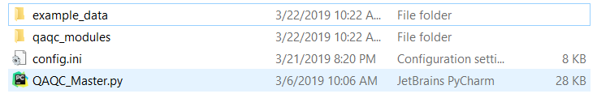
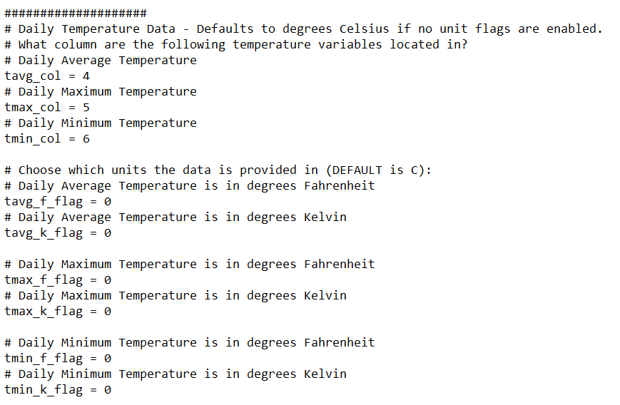

Setting Up The Data¶
In order for the code to work, you need to specify what weather variables are being provided, where in the data file they are located, and what units they are in. Most weather stations on a network have the same format for their data, so this process may only have to be done once for multiple stations.
All of this is accomplished through the parameters specified in config.ini, but before getting into that we’ll talk about directory structure.
Directory Structure¶
{kind=link}
Assuming you have cloned the github directory, your folder should contain the following items:
- The “qaqc_modules” directory containing the different functions used by the main script.
- config.ini - The configuration file used by the script to find variables in the data file.
- QAQC_Master.py - The actual script you will call to process weather data. Your icon may not match what is pictured here.
- A .csv data file containing the weather data to process. In this example, it is located within the “example_data” folder.
When the file QAQC_Master.py is run, it looks for the config.ini file within the same folder and starts pulling all the relevant information from that file.
The github repository includes an example data file and a matching config.ini that is already set up to be run. We’ll go over this data in the Example Run.
Note
pyWeatherQAQC saves all of the output files in the same directory as the input file, so plan accordingly!
Setting Configuration File¶
The configuration file can be broken down into 3 sections:
METADATA¶
The very top section of the config.ini file is where you will specify the metadata of the data file and of the station to the script. This includes things like the station’s geographical location and whether or not the file has a header.
MODES¶
The next section of the config.ini file is where you will specify what modes, or options, you want the script to run with. Examples of this would be whether or not you wanted to correct the data, or whether or not you wanted to generate and save plots of the data. This section may change in the future as more options are added.
All of the settings in this section are either set to “0” (indicating FALSE, or NO) or “1” (indicating TRUE, or YES). For most users, the only option you’ll actually change will be script_mode, depending on if you want to correct data or not.
DATA¶
The majority of work in setting up the config.ini file is in this section, where we specify what variables are in which columns of data, and what units those variables are in. The configuration file has explanations for its various prompts, but as an example, we’ll look at specifying the details for solar radiation:

The example weather station we are using measures daily cumulative solar radiation (Rs), which we would like to examine, possibly correct, and then use for calculating ET. To do so, we need to specify where in the data file our solar radiation data is. Our data is organized as such:
We can see that Solar radiation data is measured in langleys, and is located in Column E, which might lead you to think it’s in the 5th column. However, in Python, indexes start at 0, so Column A would be 0, Column B would be 1, and so on. Accounting for that, we would say Rs data is actually in Column 4.
Now that we have that information, we can go to the relevant section of the .ini file and fill it in:
![The configuration parameters for solar radiation in the [DATA] section.](_images/solar_config.png)
Fill in rs_col with the appropriate value (in this case, 4), and set the appropriate unit flag (in this case, langleys) from “0” (indicating FALSE) to “1” (indicating TRUE).
If, hypothetically, the solar radiation data was provided in w/m2, you would indicate that to the script by having all other unit flags be set to 0 (FALSE). The blue box highlights the text that indicates what units are the expected default.
If we look at the section for temperature data:
{kind=link}
We can see that the layout is the same, including the text indicating what the default units are.
A note on humidity data:
Humidity is commonly measured through either:
- Actual Vapor Pressure (Ea)
- Dewpoint Temperature (TDew)
- Maximum and Minimum Relative Humidity (RHMax and RHMin)
- Average Relative Humidity (RHAvg)
In terms of accuracy, this is a tiered list where the top option (Ea) is most desirable, and the bottom option (RHAvg) is the least. When configuring humidity measurements, input all the variables you may have, and the script will automatically pick the most preferable option.
For the next step, see the Example Run.